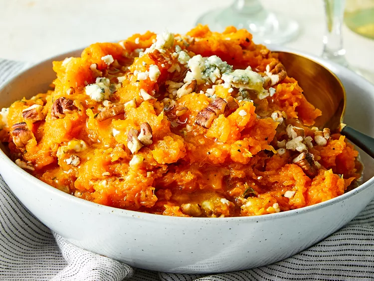

Mashed Butternut Squash with Blue Cheese and Pecans

Description
Hints of natural sweetness make this colorful veggie side a perfect partner for your favorite savory dishes.
Ingredients
- 1 ½ pounds butternut squash, cubed
- ½ teaspoon salt
- ⅛ teaspoon black pepper
- ½ cup chopped toasted pecans
- 2 tablespoons pure maple syrup
- 2 ounces blue cheese crumbles
- 1 teaspoon fresh thyme leaves
Steps
- Put butternut squash in a microwave-safe baking dish with a lid. Season with salt and pepper. Microwave, covered, until squash is tender, 8 to 10 minutes.
- Coarsely mash with a potato masher or fork. Stir in pecans, maple syrup, blue cheese crumbles, and fresh thyme leaves until combined.